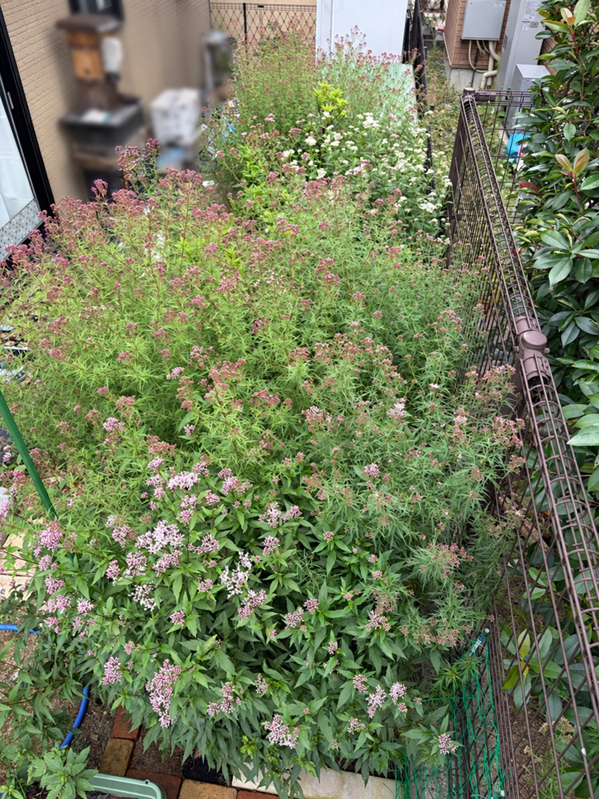

蕾が目立っていた花壇に、ピンクと白の花が広がりました
10月12日の花壇全体です。前回の9月22日から20日がたちました。緑の葉の間に小さな花房や蕾が点々と見えていた花壇は、その後さらに咲き進み、今回は手前から中央、奥にかけて花の色が広がっています。
9月22日は、密に茂った葉や枝の存在感が大きく、その中にピンク色が少しずつ加わり始めた状態でした。手前では花房が葉の上に顔を出し、中央の細かな葉の株では、枝先に小さく締まった蕾が散らばっていました。
今回は、その枝先の花房が以前よりはっきりと見えるようになりました。手前には淡いピンク色の花がまとまって咲き、中央には濃いピンク色の蕾と咲き始めた花が広く散らばっています。さらに奥のフェンス寄りには白い花がまとまり、花壇の中で色の違いも楽しめるようになりました。
葉が茂っているだけの景色から、育った株がそれぞれに花を付ける景色へ。9月22日に楽しみにしていた変化が、花壇全体に表れてきました。

手前は花房がふくらみ、淡いピンク色が目を引きます
手前の葉幅のある株では、葉の上にいくつもの花房が上がっています。9月22日にもピンク色のまとまりは見られましたが、今回は花房の輪郭がよりはっきりし、淡いピンク色から白っぽく見える花が目立つようになりました。
花房をよく見ると、小さく丸い蕾が集まった部分と、細い糸のようなものが伸びて、ふんわりと見える部分が入り交じっています。蕾の段階では粒の集まりに見えていたものが、咲き進むにつれてやわらかな質感へ変わり、花房全体にも広がりが出てきました。
手前の中央だけでなく、左側やフェンスに近い右側にも花房があり、株のあちらこちらで開花が進んでいます。緑の葉を背景に淡い花色が浮かび上がり、9月22日よりも花の存在感が増しました。
ただし、すべての花房が同じ状態ではありません。白っぽく開いた花が目立つところもあれば、ピンク色の蕾を多く残しているところもあります。一つの花房の中でも、開いた花とこれから咲く蕾が混在しており、まだ咲き進む途中の姿です。
中央には、色づいた蕾と咲き始めた花が広く散らばっています
中央を大きく占める細かな葉の株では、枝分かれした茎の先々に、ピンク色の花房が広がっています。9月22日は、緑の中に小さな色の点が散らばっているような見え方でしたが、今回は一つ一つの花房がより目に入り、花壇の広い範囲に色が付いたように感じます。
茎の高さはそろっておらず、高く立ち上がった枝先にも、少し低い位置で横へ広がった枝先にも花房があります。そのため、花が一枚の平らな面になるのではなく、高さを変えながら重なり、中央の茂みに立体感が出ています。
花房の多くは赤みのあるピンク色で、まだ小さな粒が集まったように見える部分が残っています。一方で、淡い色の花が開き始めているところもあり、全体が蕾だけの状態から、蕾と花が入り交じる状態へ変わってきました。
手前のふんわりした淡い花房と比べると、中央はまだ締まった蕾の印象が強く残っています。花房の数や広がりは目立ちますが、すべてが満開というわけではありません。これから開いていく花も多く、咲き進み方には場所ごとの差があります。
奥の白い花が、花壇の中で明るいまとまりになっています
今回、手前や中央のピンク色とともに目を引くのが、奥のフェンス寄りにまとまって咲く白い花です。白フジバカマ原種系は満開を迎え、緑の葉の上に白い花房が重なっています。
9月22日の全景では、奥側は背の高い茎や葉の存在感が中心でした。今回は、その一角に白い花がはっきりと見え、花壇の奥にも開花の見どころができました。
手前の淡いピンク色、中央に広がる濃いピンク色の蕾、奥の白い花。それぞれの色が違う位置にあることで、手前だけでなく、花壇の奥まで自然に目が向きます。
白い花がまとまっている部分は、周囲の緑やピンク色との違いが分かりやすく、花壇全体の中でも明るく見えます。株ごとの咲く時期に違いがあるからこそ、今はこの白い花のまとまりが、ひときわ目を引いているように感じます。
花壇全体が一斉に満開になったわけではありません
花の色はかなり増えてきましたが、花壇全体をひとまとめに「満開」とする状態ではありません。満開の白フジバカマ原種系がある一方で、フジバカマ原種系にはまだ多くの蕾が残っています。
同じピンク色に見える花房でも、近くで見ると、丸い蕾が中心のもの、花が開き始めたもの、細い糸のような部分が伸びて白っぽく見えるものが混在しています。遠くから見た花の色の広がりと、実際に開いている花の量には違いがあることも感じます。
9月22日からの変化は、単に花壇全体の色が濃くなっただけではありません。小さかった花房が目立つようになり、その中で少しずつ花が開き、蕾のまとまりとは違うやわらかな姿が加わってきたことが、大きな変化です。
先に咲きそろった白い花と、これからさらに咲き進むピンク色の花。それぞれの段階が重なり、花壇の景色を作っています。
花を支える葉の茂りも、引き続き保たれています
開花が進んでも、花壇には緑の葉が十分に残っています。手前では幅のある葉が重なり、中央では細かな葉と枝が絡み合うように広がっています。
手前から奥へと株の高さが変わる構成も続いており、低い位置の花房から高く立ち上がった茎先まで、さまざまな高さで花や蕾が見られます。9月22日までに育った株のボリュームが、そのまま今回の花の広がりにつながっているように感じます。
一部には葉色が明るく見えるところもありますが、全体としては緑が主体です。花ばかりでなく、その下に重なる葉や枝にも厚みがあり、花壇全体の密な茂りは引き続き保たれています。
10月12日、待っていたアサギマダラが初めて庭へ
そしてこの日、花壇の開花とともに待ち続けていた出来事がありました。10時30分頃、2匹のアサギマダラが庭に初めて飛来しました。
アサギマダラに来てもらいたいと思いながらフジバカマを育て、花が咲く様子を見守ってきました。9月22日は、これから蕾が開いていく姿を楽しみにしていましたが、その20日後、実際に蝶が訪れて蜜を吸う姿を見ることができました。
2匹のうち、大きくて翅に欠けがある個体は1時間半ほど滞在しました。もう一方の小さくて翅がきれいな個体は、16時30分まで約6時間も滞在していました。少し立ち寄ってすぐに飛び去るのではなく、花にとまって長く吸蜜してくれたことが、とてもうれしく感じられました。
葉が育ち、蕾が付き、花が開く。その経過を記録してきた花壇が、この日は蝶の吸蜜する場所にもなりました。花の変化を楽しむだけでなく、育ててきた花を蝶が利用する姿まで見られた、思い出に残る一日です。
吸蜜の中心は、満開の白フジバカマ原種系でした
この日、アサギマダラが主に蜜を吸っていたのは、満開の白フジバカマ原種系でした。フジバカマ原種系でも吸蜜する姿は見られましたが、長く観察していると、白い花の方で過ごす様子が特に印象に残りました。
花壇の開花状況と重ねて見ると、白フジバカマ原種系には開いた花が多く、フジバカマ原種系にはまだ蕾が多く残っています。この咲き具合の違いも、吸蜜する場所に関係していたのかもしれません。
ただ、この日の様子だけで、白い花の方を好むと決めることはできません。花の種類だけでなく、そのときにどれだけ花が開いているかによっても、訪れ方が変わるのではないかと感じました。
花壇を眺めるときも、花房の色だけでなく、蕾が多いのか、花が開いているのかを見ることが大切なのだと思います。これからピンク色の花がさらに咲き進んだとき、アサギマダラがどの花を訪れるのかも、楽しみに観察していきたいと思います。
花の広がりと初飛来を、一緒に記録できた日
9月22日は、緑の中に花房や蕾が目立ち始めた日でした。10月12日は、その花房が咲き進み、ピンクと白の花が花壇の各所に広がった日となりました。
手前にはやわらかく開く淡いピンク色の花房、中央にはこれから開く蕾を多く残した花房、奥には満開の白い花。それぞれが異なる段階で秋の花壇を彩っています。
その開花の進んだ花壇に、待っていたアサギマダラが初めて訪れてくれました。花が咲いたことと、蝶が来てくれたこと。その両方を一緒に記録できる、うれしい節目になりました。
まだ蕾を残す株も多く、花壇の景色はこれからも変わっていきそうです。花房が咲き進む様子と、そこへ訪れるアサギマダラの姿を、引き続き見守っていきたいと思います。
2026/10/12 アサギマダラの飛来・観察記録を見る →